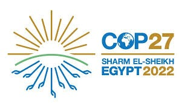
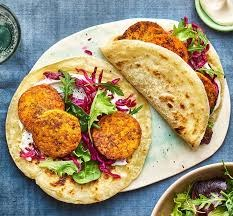
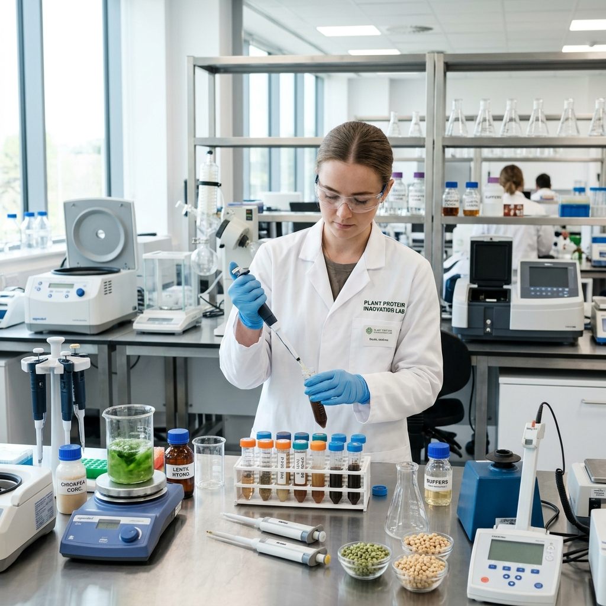

ABOUT
식물성 단백질 푸드테크를 통해
지속가능한 농식품시스템에 기여합니다.
Education
성균관대학교 사회학과 / 식품생명공학과
SungKyunKwan University BA Sociology / BS Food science and biotechnology
Projects

GLOBAL ADVOCACY
제27차 유엔기후변화협약 (COP27) 청년대표 발표
기후위기 대응을 위한 지속가능한 농식품 시스템의 중요성 발표
CREATIVE CONTENT
'맛있게 채식한끼' 프로젝트
경기청년 갭이어 프로그램 300만원 지원금 선정
채식 레시피 개발 및 영상 제작, 누적 조회수 26,000회 및 좋아요 650개 달성


SUSTAINABLE STARTUP
(Ongoing) 국산 콩 활용 식물성 단백질 제품 개발
10만 톤 규모의 잉여 국산 콩 부가가치 창출을 위한 스낵 제품 구상 및 글로벌 시장 진출 전략 수립
Experience
2026.04~
Learner
SPEC (SKKU Prep Entrepreneurs' Club)
2025.08 - 2026.02
Young Professional
FAO Korea Association
2024.06 - 2025.01
Undergraduate Research Assistant
성균관대학교 식품생명공학과
2023.01 - 2024.01
Study Abroad
University of Leeds (영국)
2023.06 - 2023.07
AI Content Writer
TechMahindra (영국)
2022.11
COP27 청년대표 발표
유엔기후변화협약 당사국총회
2022.10 - 2022.12
🥉 3rd, FOOD INNOVATIVE CHALLENGE
Proveg
2022.06 - 2022.08
융합기초프로젝트
성균관대학교 대학혁신과공유센터
2021.12 - 2022.12
학생회장
성균관대학교 사회학과
2022.04 - 2022.12
STEPI 기자단
과학기술정책연구원(STEPI)
2021.02 - 2021.08
기획부장
성균관대학교 중앙환경동아리 Re:skku
Skills
🛠️ Hard Skills
📊 Analytic skills (Stata, SAS, R, Python)
🌎 Global Communication (Korean, English, French)
🤝 Soft Skills
✅ Communication
✅ Organization
✅ Leadership
✅ Problem-solving
Contact
지속가능한 미래를 위한 파트너십을 환영합니다.
jaeminho21@gmail.com